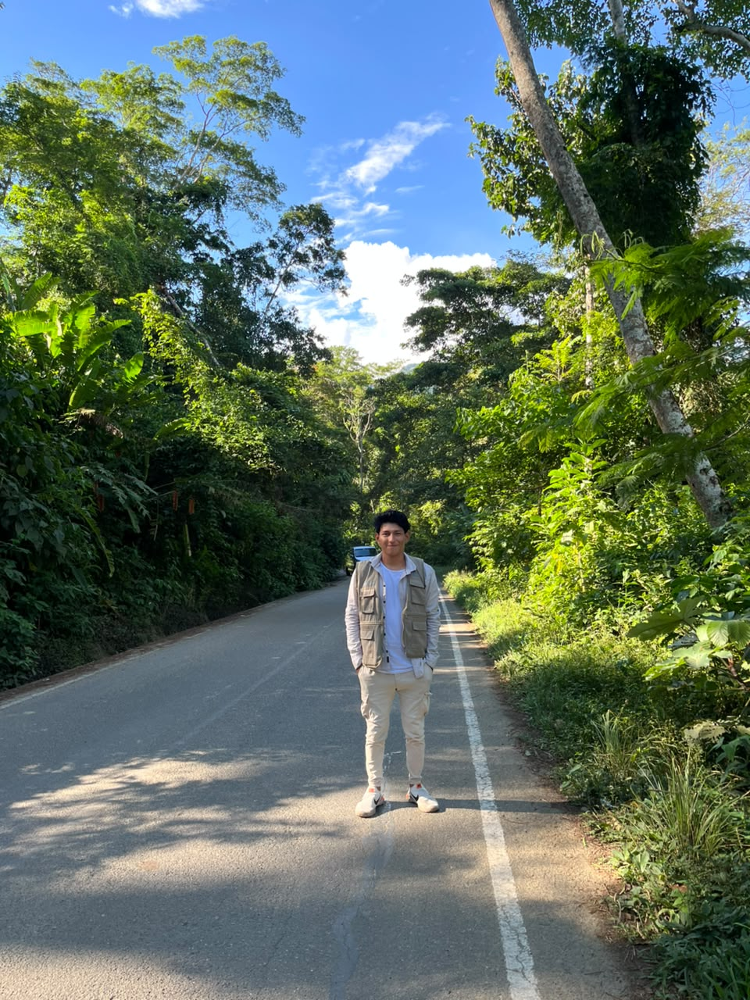
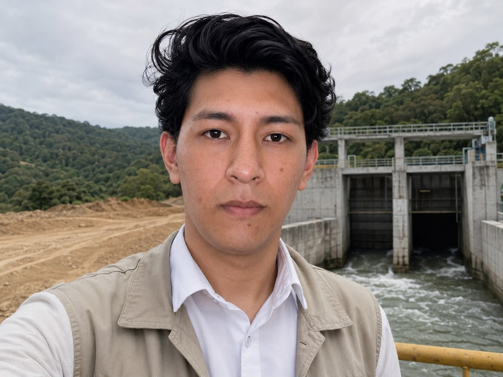
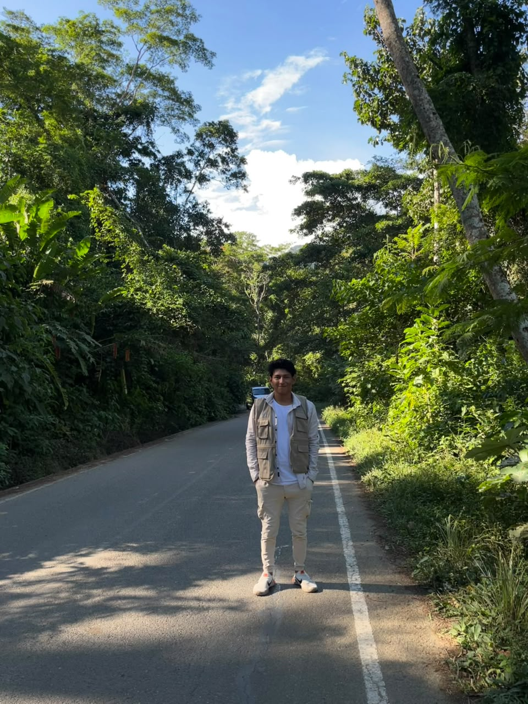

Me dedico a la producción audiovisual, un campo que me apasiona y en el que combino creatividad con técnica para contar historias visuales que impactan.
Actualmente me desempeño como operador de canal en Vía Televisión, donde gestiono la transmisión en vivo y el control de señal día a día.
Soy dronista profesional, captando imágenes aéreas únicas para proyectos comerciales, publicitarios y cinematográficos.
Mi trabajo abarca múltiples disciplinas creativas: fotografía, videografía, edición, diseño e ilustración. Cada proyecto es una oportunidad de llevar la visión del cliente al siguiente nivel.
El Autoconocimiento como Cimiento Creativo: Este nivel de autoconocimiento me ayuda a filtrar las distracciones, mantener el enfoque en mi propósito y construir una visión propia. Me permite liderar equipos e interactuar con clientes desde la empatía y la claridad, asegurando que cada proyecto refleje una intención real.
La Autodisciplina como Estructura de la Innovación: Al sistematizar mis hábitos, establecer prioridades claras y mantener la constancia en cada etapa de desarrollo, logro transformar conceptos abstractos en realidades tangibles y funcionales, llevando cada proyecto hacia la excelencia.

Inteligencia Espacial: percibo el entorno visual y espacial con gran precisión, así como la habilidad para manipular, modificar y recrear esas percepciones en la mente.
Inteligencia Interpersonal: considero que tengo la habilidad de entender y comunicarme con los demás. Fundamental para comprender las verdaderas necesidades del cliente, liderar equipos y negociar con proveedores o contratistas.
Fortalezas que marcan la diferencia en el camino del crecimiento.
Domino el proceso completo de producción: planificación, grabación y postproducción. Combino creatividad y técnica para contar historias visuales que impactan y conectan con la audiencia.
Capturo imágenes aéreas únicas con precisión y seguridad. Manejo equipos profesionales para proyectos comerciales, publicitarios y cinematográficos, adaptándome a cualquier entorno.
Gestiono la transmisión en vivo como operador de canal en Vía Televisión, controlando señal, tiempos y calidad de emisión con responsabilidad y eficiencia en cada turno.
Tengo un ojo entrenado para la composición, la luz y el momento preciso. Cada disparo o toma es una decisión estética consciente que refleja la identidad visual del proyecto.
Edito video y audio con fluidez narrativa, aplicando color grading, motion graphics y efectos que elevan el resultado final. Cada corte tiene intención y cada segundo cuenta una historia.
Creo piezas visuales desde cero: identidades, ilustraciones y materiales gráficos. Mi formación multidisciplinaria me permite integrar el diseño al servicio de la comunicación visual.
Percibo el entorno visual con gran precisión, lo que me permite encuadrar, componer y diseñar con una visión clara del espacio. Esta habilidad es clave en fotografía, drones y diseño.
Me organizo con hábitos claros y mantengo constancia en cada etapa de un proyecto. La autodisciplina me permite cumplir plazos, mantener la calidad y seguir creciendo sin perder el rumbo.
Me comunico de forma clara y empática con clientes y equipos. Lidero procesos creativos escuchando activamente, generando confianza y asegurando que cada proyecto refleje la visión acordada.